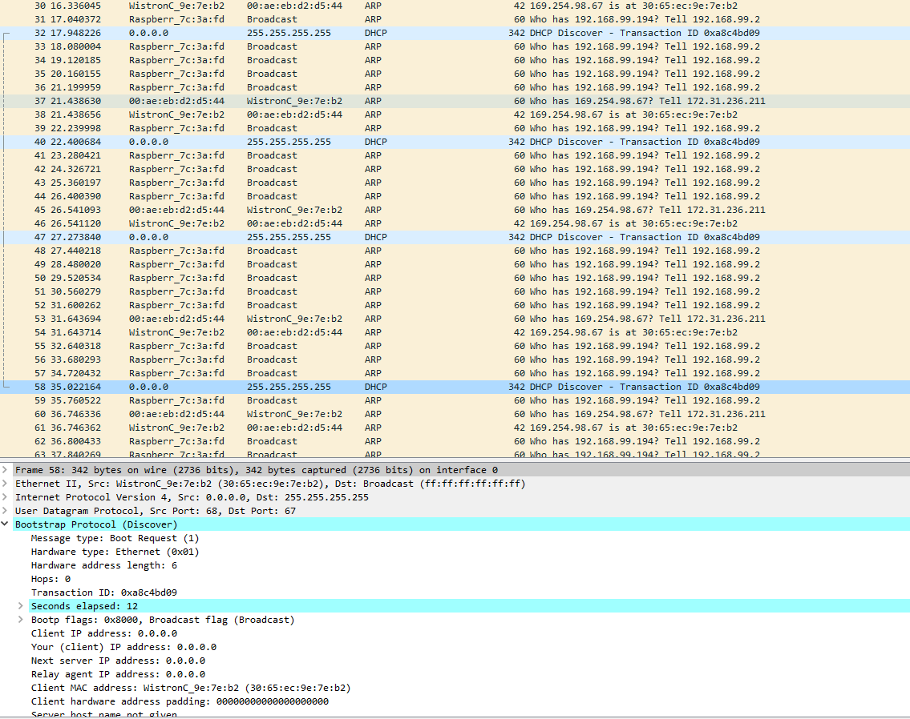

Ich habe das Problem, dass sich beim Router Huawei B315s-22 der DHCP Dienst nicht korrekt deaktivieren lässt. In der Oberfläche kann man die Funktion zwar deaktivieren und der Router verteilt dann auch keine IP Adressen mehr, jedoch werden alternative DHCP Server im Netz vom Huawei Router blockiert. Sowohl ein DHCP Server auf Windows als auch auf einem Raspberry Pi.
Das Setup ist folgendes:
- Alle Clients per LAN Kabel (um etwaige WLAN Probleme auszuschließen) direkt an den LAN-Ports am Huawei Router.
- Windows Rechner mit DHCP Server auch per LAN Kabel direkt am Huawei Router (alternativ anstatt den Win PC einen Raspberry Pi mit laufendem DHCP Server)
- DHCP Server hat jeweils eine fixe IP
- DHCP am Router deaktiviert
- 1 Linux und 1 Windows Client auch per LAN Kabel am Router
Beim Verbinden des Windows clients erfolgt ein DHCP Request ins Netz, jedoch wird hier nun durch den Huawei Router die Antwort anscheinend in irgendwelcher Form blockiert.
Wenn ich beim ganzen Setup den Huawei Router gegen einen anderen Router mit deaktiviertem DHCP ersetze, verteilen sowohl Windows PC als auch Rasperry Pi IP Adressen.
Hat jemand schonmal ein ähnliches Setup probiert bzw. das hinbekommen?
Hello,
Unterscheiden sich der T-Mobile Router und der andere Router konfigurationstechnisch voneinander?
Hast du schon mal versucht einem Client die IP Adresse manuell zuzuweisen und zu schauen, ob du überhaupt den DHCP Server pingen kannst?
Lg
Danke schonmal für die Antwort. Und Ja, mit fixer IP am client ist der DHCP ganz normal erreichbar.
Der andere Router ist ein reiner Router ohne LTE modem (also kein internet beim testen, sollte aber für sen dhcp server keinen Unterschied machen)
Ansonsten ist sowohl der Huawei als auch der andere auf default Einstellungen.
Sehr spannend ...
D.h du hast auch mal deinen Netzwerktraffic ein wenig analysiert mit z.B.: Wireshark?
Lg
Ja, der client probiert 4x per broadcast ein dhcp discover aber bekommt eben keine Antwort. Weißt du zufällig ob es alternative Firmware für das Huawei gibt, bzw. irgendwo die Huawei Stock firmware? Vermutl. ist dann die Garantie von T-Mobile weg, schätz ich mal, od?

Nach ein wenig googlen habe ich nun auch eine Amazon Bewertung mit ähnlichem Verhalten gefunden.
Siehe Punkt 2 von der Rezension:
https://www.amazon.de/gp/customer-reviews/R1TCR69V8P5UZ4/ref=cm_cr_arp_d_rvw_ttl?ie=UTF8&ASIN=B015E3MKSW
Am 9/30/2017 um 11:02 schrieb smitti:
Ja, der client probiert 4x per broadcast ein dhcp discover aber bekommt eben keine Antwort. Weißt du zufällig ob es alternative Firmware für das Huawei gibt, bzw. irgendwo die Huawei Stock firmware? Vermutl. ist dann die Garantie von T-Mobile weg, schätz ich mal, od?
Eine Firmware findest du sicher irgendwo, aber wie du schon sagst, wenn du das auf eigene Hand flasht, dann wird die Garantie weg sein ... Bzw, das Problem könnte sein, dass du die Originalfirmware nicht bekommst, falls was schief geht ..

Ich finde es trotzdem eigenartig, dass das irgendwie nicht funktioniert
 ...
...
Ja ich auch, aber es scheint tatsächlich der Router in irgendwelcher Form zu sein.
Ich habs am WE auch jemand mit dem selben Router probieren lassen mit einer Apple Time Capsule als DHCP Server. Die Geräte die sich direkt über WLAN zur Capsule verbunden haben, bekamen eine IP, die die per LAN am Router hingen nicht.
 Sehr spannend. Eigentlich sollte man da mal beim Hersteller nachfragen. Oder mal bei T-Mobile ob die wirklich was an der Firmware gedreht haben - weil das dürfte grundsätzlich nicht passieren ...
Sehr spannend. Eigentlich sollte man da mal beim Hersteller nachfragen. Oder mal bei T-Mobile ob die wirklich was an der Firmware gedreht haben - weil das dürfte grundsätzlich nicht passieren ...
{kind=link}